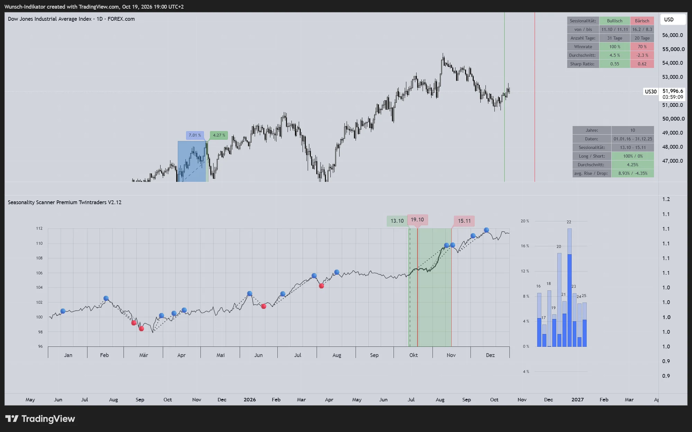
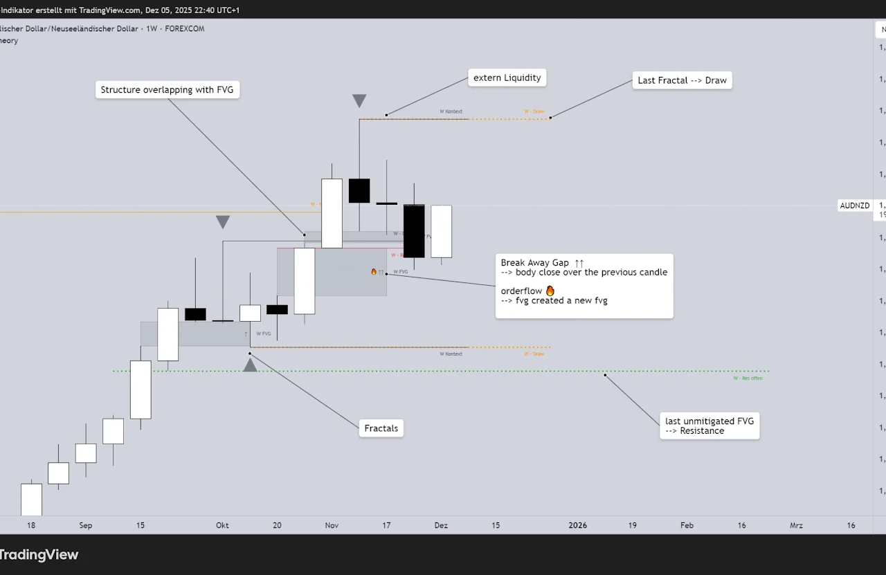

PROJEKTE & INDIKATOREN
TradingView-Indikatoren kaufen
Ich biete hier verschiedene Indikatoren zum Verkauf an. Bitte schau dir auch gerne die Indikatoren von meinen Projektpartnern an!

Seasonality Scanner
Sessionalitäten für einen statistischen Vorteil im Markt!
Details ansehen
Liquidity School Pro
Marktstruktur, Smart Money Konzepte und das HXHY-System.
Details ansehen
FVG Theory
Multi-Timeframe Indikator für die Analyse von Marktstruktur und Fair Value Gaps.
Details ansehenDER NÄCHSTE SCHRITT
Aus deiner Idee wird dein Programm.
Erzähl mir, wie du tradest. Ich helfe dir, deine Regeln in Code zu übersetzen und programmiere das für dich!
Reviews:
★★★★★ "Volle Empfehlung! Starke Umsetzung aller Wünsche und auch persönlich ein toller Typ! Macht richtig Spaß und gern wieder"
Google-Bewertung ansehen
★★★★★ "Michi ist ein sehr guter Programmierer! Was er für unsere Trading Community gezaubert hat ist einfach nicht von dieser Welt! Er weiß was er tut und ist dabei auch noch super sympathisch! Schenkt ihm euer Vertrauen und es wird sich lohnen!"
Google-Bewertung ansehen
★★★★★ "Es ist unfassbar, wieviel Arbeit der Indokator von Michi mir als Trader abnimmt. Setups werden automatisch identifiziert und ich muss nur noch die Trades setzen, so wie sie angezeigt werden. Außerdem werde ich per Alarm benachrichtigt, wenn das gewünschte Setup sich am bilden ist, oder ausgebildet hat. Das gibt mir die Freiheit nicht ständig am Chart sein zu müssen. Das nenne ich Freiheit!!"
Google-Bewertung ansehen
★★★★★ "Michi ist ein herausragender Pine Script Entwickler mit tiefem Verständnis für die Finanzmärkte! Sein Liquidity School Pro Indikator ist eine große Bereicherung für meinen Trading-Alltag, da er es mir ermöglicht, jedes gewünschte Setup mit passgenauen Alarmen abzubilden. Michi ist zudem äußerst freundlich und hilfsbereit und beantwortet geduldig jede Frage, die aufkommt. Dank seiner Expertise und seinem Engagement habe ich vollstes Vertrauen in ihn und empfehle ihn uneingeschränkt weiter!"
Google-Bewertung ansehen